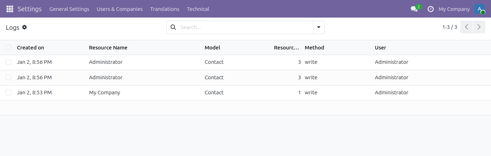

Flous Flow Audit Log
Keep a searchable audit trail of important Odoo data operations and review who did what and when.

Key features
- Track create, read, update, and delete operations on selected Odoo models.
- Review the responsible user, date, model, record, session, and changed values.
- Configure audit rules per model and enable only the operations your control process requires.
- Review individual record history from the Odoo interface.
- Schedule retention cleanup for old audit records.
How it works
- Open Settings → Technical → Audit → Rules.
- Select the Odoo model and operations to track, then subscribe the rule.
- Review the resulting entries under Settings → Technical → Audit → Logs.
Flous Flow distribution
This Odoo 19 package is maintained and supported by Flous Flow. It is based on the OCA Audit Log module; original OCA attribution and the AGPL-3 license remain applicable.
For support, contact support@flousflow.com.
Compatibility
Odoo 19 Community and compatible Odoo 19 deployments. The module depends only on the standard base module.